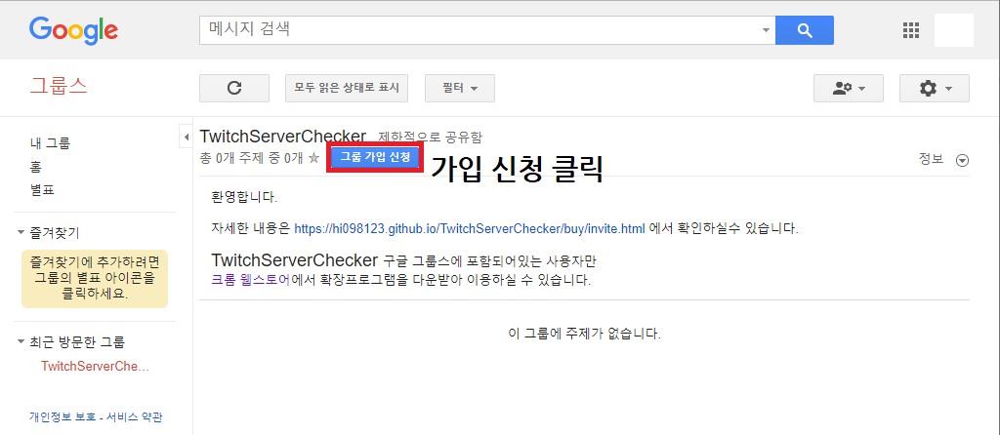
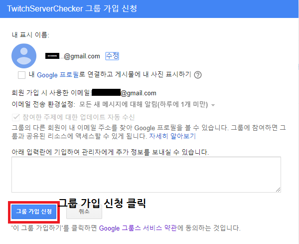
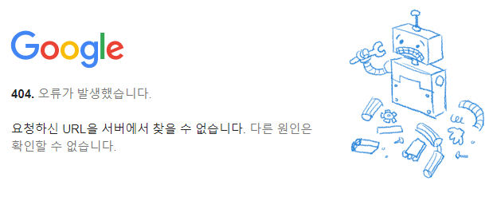

1. Twitch Server Checker 구글 그룹스 페이지
입금완료 상태에서 "Twitch Server Checker 구글 그룹스 페이지"에 가입을 넣습니다.
만약 그룹스에 접속이 안되시면 잠시후 새로고침을 다시해주세요! 그룹스 페이지가 조금 느리더라고요
입금시 입력한 이메일주소와 같아야 자동으로 승인 처리됩니다.
10분이내에 자동으로 처리되며 아래의 스토어 주소에 접속할 수 있습니다.
 404 페이지가 뜨는경우 잠시 기다려주세요..
구글 서버가 동기화 되는시간이 오래걸릴수도 있습니다.
만약 30분이 지나도 안되신다면 이메일 확인과 고객센터 (카카오톡 오픈채팅)로 문의주세요
